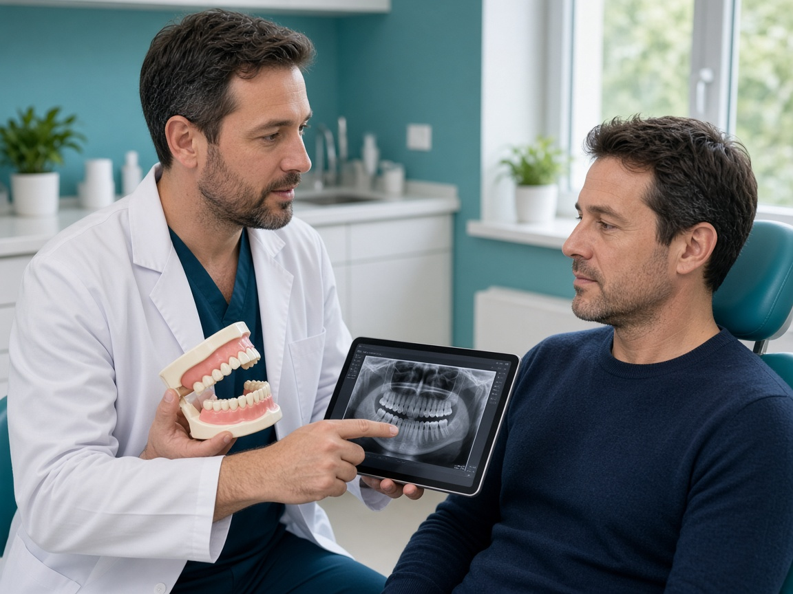

your smile deserves expert care
Oral & Maxillofacial Surgery in Kondapur and Gachibowli
Home | Oral Maxillofacial
your smile deserves expert care
Home | Oral Maxillofacial
Oral Maxillofacial
Oral and maxillofacial surgery encompasses the diagnosis and surgical treatment of complex dental, facial, and jaw conditions. At Ekaa Dentistry, our highly trained oral and maxillofacial surgeons offer a comprehensive range of advanced Kondapur dental services, including routine wisdom teeth removal and intricate corrective jaw surgery. Each procedure is executed with precision, utilizing advanced technology, while ensuring patient comfort and safety are prioritized. Alongside our surgical expertise, we also provide cosmetic dentistry, dental implants, and restorative treatments, delivering complete oral healthcare all under one roof.
One of the most commonly performed oral and maxillofacial surgery procedures is tooth extraction. Extractions may be necessary due to severe tooth decay, advanced gum disease, or dental trauma and infection. Additionally, wisdom teeth removal is a frequently recommended procedure, as impacted or partially erupted wisdom teeth can lead to pain, swelling, infection, and misalignment of nearby teeth. At Ekaa Dentistry, part of our Kondapur dental services, we utilize advanced surgical techniques and appropriate sedation options to ensure a comfortable and stress-free extraction experience. For those considering corrective jaw surgery or dental implants, our expert team is here to provide comprehensive care.
For patients experiencing jaw misalignment that impacts chewing, speech, breathing, or facial balance, corrective jaw surgery, also known as orthognathic surgery, may be recommended. This specialized procedure enhances:
Our skilled surgical team, part of our Kondapur dental services, thoroughly evaluates each case to create a personalized treatment plan aimed at functional and aesthetic improvements. Additionally, we offer comprehensive oral and maxillofacial surgery options, including dental implants and wisdom teeth removal, to ensure your smile is both beautiful and healthy.
Ekaa Dentistry provides comprehensive Kondapur dental services, including reconstructive oral and maxillofacial surgery for patients facing challenges from facial trauma, developmental abnormalities, or congenital conditions. These procedures, such as corrective jaw surgery and wisdom teeth removal, are designed to restore facial structure, function, and appearance while also supporting long-term oral health. Additionally, our expertise in dental implants ensures that patients achieve optimal results.
For patients considering dental implants, sufficient jawbone support is essential. When bone volume is inadequate, bone grafting procedures may be necessary to strengthen the jaw and ensure the stability of dental implants. Additionally, our Kondapur dental services include sinus lift surgery, a specialized procedure that adds bone to the upper jaw in preparation for implant placement. We also offer corrective jaw surgery and wisdom teeth removal as part of our oral and maxillofacial surgery options. Regular dental check-ups are scheduled to monitor healing and ensure the long-term success of your dental implants.
Recovery time after oral surgery, including procedures like wisdom teeth removal and corrective jaw surgery, varies depending on the specific treatment performed. At Ekaa Dentistry, our Kondapur dental services include detailed post-operative care instructions designed to promote healing and minimize the risk of complications. We schedule follow-up appointments to monitor recovery and ensure optimal outcomes for our patients. As part of our comprehensive dental care services, we also provide treatments such as dental implants, root canal therapy, restorative dentistry, and specialized pediatric dentistry for younger patients.
Our experienced oral and maxillofacial surgeons specialize in corrective jaw surgery and dental implants, utilizing advanced surgical techniques and sedation options. We offer comprehensive Kondapur dental services under one roof, ensuring a patient-centered and ethical treatment approach. Equipped with modern technology and strict safety protocols, we also provide services like wisdom teeth removal to meet all your oral health needs.
If you require expert oral and maxillofacial surgery, including services like corrective jaw surgery or wisdom teeth removal, Ekaa Dentistry is here to assist you. We also offer advanced options such as dental implants. Contact us today to learn more about our Kondapur dental services and to schedule a consultation. 📞 Call us | 💬 WhatsApp for quick appointments | 📅 Book now
Call or Whatsapp us on +919030121100
Please reach us at +91 903012100 if you cannot find an answer to your question.
What is oral and maxillofacial surgery? Oral and maxillofacial surgery is a specialized dental field that treats complex conditions involving the teeth, jaws, face, and mouth. At Ekaa Dentistry in Kondapur near Gachibowli, oral surgery services are provided for safe, effective management of dental and facial concerns.
When do I need oral and maxillofacial surgery? You may need oral surgery for impacted wisdom teeth, severely damaged or infected teeth, jaw misalignment, facial injuries, cysts, tumors, or to prepare the jaw for dental implants. Our specialists in Kondapur evaluate each case carefully before treatment.
What oral surgery procedures are offered at Ekaa Dentistry in Kondapur? Ekaa Dentistry near Gachibowli provides:
Is wisdom teeth removal available near Gachibowli? Yes. Wisdom teeth removal is commonly performed at our Kondapur clinic. Impacted or partially erupted wisdom teeth can cause pain, swelling, and infection and often require surgical extraction to prevent complications.
Is oral surgery painful? Oral surgery at Ekaa Dentistry is performed using local anesthesia and sedation options to ensure patient comfort. Most patients experience minimal discomfort during the procedure and mild soreness during recovery.
How long does recovery take after oral surgery? Recovery time varies depending on the procedure. Simple tooth extractions may heal within a few days, while complex surgeries such as jaw correction or bone grafting may take several weeks. Our Kondapur clinic provides detailed aftercare instructions for smooth recovery.
What is bone grafting and why is it needed? Bone grafting is a procedure that restores jawbone volume when there is insufficient bone to support dental implants. It is commonly performed at our Kondapur dental clinic before implant placement.
What is a sinus lift procedure? A sinus lift is a specialized oral surgery that adds bone to the upper jaw near the sinus cavity. This procedure is often required for patients in Gachibowli or Hitech City planning dental implants in the upper back teeth.
Who is a good candidate for oral and maxillofacial surgery? Patients with impacted teeth, missing teeth, jaw alignment issues, facial trauma, or insufficient jawbone may be suitable candidates. A consultation with our oral surgery specialists in Kondapur helps determine the best treatment plan.
How should I prepare for oral surgery? Preparation may include diagnostic imaging, medication review, and fasting instructions if sedation is planned. Our team at Ekaa Dentistry near Gachibowli provides personalized pre-surgical guidance.
What aftercare is required following oral surgery? Aftercare includes rest, prescribed medications, soft foods, proper oral hygiene, and follow-up visits. Regular reviews at our Kondapur clinic help ensure proper healing and successful outcomes.
Is oral and maxillofacial surgery safe? Yes. When performed by trained specialists using modern technology and strict sterilization protocols, oral and maxillofacial surgery is safe and effective.
Where can I get oral and maxillofacial surgery near me? If you are searching for oral and maxillofacial surgery near you in Kondapur, Gachibowli, or Serilingampalle, Ekaa Dentistry offers comprehensive oral surgery care under one roof with specialist expertise.
This content is reviewed by our Oral Maxillofacial Surgeons with extensive experience in all OMFS procedures including Tooth extractions such as Wisdom tooth removal.All types of OMFS treatment services are available at our Serilingampalle dental clinic near Gachibowli-Kondapur Corridor.
Ekaa Dentistry – Best Dental Clinic in Kondapur & Gachibowli Ekaa Dentistry is a trusted multispeciality dental clinic in Kondapur, Hyderabad, located near the Serilingampalle–Kondapur–Gachibowli corridor. If you are searching for a dentist near me, best dental clinic near Gachibowli, or a family dentist in Kondapur, our specialist-led team provides comprehensive and comfortable dental care for all age groups. Our services include general dentistry, cosmetic dentistry, root canal treatment, dental implants, braces and Invisalign, laser dentistry, pediatric dentistry, gum treatments (periodontics), oral and maxillofacial surgery, and in-house OPG X-ray diagnostics, ensuring accurate diagnosis and complete care under one roof. We proudly serve patients from Kondapur, Gachibowli, Serilingampalle, Masjid Banda, Hitech City, Madhapur, Hafeezpet, and nearby areas. With advanced dental technology, ethical treatment planning, and a strong focus on patient comfort, Ekaa Dentistry is committed to long-term oral health and confident smiles. 📍 Location: Serilingampalle, Kondapur, Hyderabad – Near Gachibowli
📞 Appointments: Call or book online at +91 9030121100
🕒 Timings: Mon–Sun | Specialist Consultations Available © 2026 Ekaa Dentistry. All Rights Reserved.
Powered by
